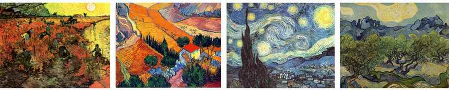

On the Church's Attitude to Artists: Andrey Dirienko
Andrey Dirienko touches on one of the important revelations for the church in the last days: the question of the CHURCH's attitude to ARTISTS.
In the winter I was at a conference in South America. A man had been invited there whom they call the pastor to presidents. He has preached to many of them, so that many of them regard him as a kind of spiritual mentor.
And he said an amazing thing that touched me very deeply. He said: we Protestants fought against idols, and along with the idols we threw creativity out of the church. If you look carefully at the Middle Ages, all creative people then were looking for ways to bring their gifts into the church. And they were all needed in the church.
But we fought idols so hard, we were so afraid of them, that creative people today go to Hollywood, because the church does not need them.
There were many of us ministers at that conference, more than ten thousand. And then this man challenged us. He said: "Pastors, think, pray to God about how to bring creative people back into the church, so that they can see how God can be glorified in the church through their talents. Instead of saying 'Hollywood is dirty, Hollywood is vulgar', show these people that they are wanted here, that God needs them." That is the task he set before us.

He gave us a simple example: the sad story of the artist Van Gogh. He was born into a pastor's family. His grandfather was a pastor too. It was his destiny that he simply had to become a pastor. But he felt a calling to art. So the pastor and the artist were constantly fighting inside him. At times he would start preaching, and he gave many sermons in his life. Then he would start painting. Then he would preach again and paint again. He was driven to madness by this division within himself.
And this pastor asked us a question: which of you remembers even one of Van Gogh's sermons? One has to admit they were mediocre… It was not his gift. But which of you knows his paintings?
So he did have a gift after all: the gift of an artist. And through this gift he could have glorified the Messiah so greatly.
Let us bring creative people back into the church!
Recorded by Ephraim Kalish / Torah-Art
 A Direct Hit on the Target
A Direct Hit on the Target Timur Khusnutdinov: A Jewish Album
Timur Khusnutdinov: A Jewish Album Bezalel the Artist: A Teacher's Heart
Bezalel the Artist: A Teacher's Heart